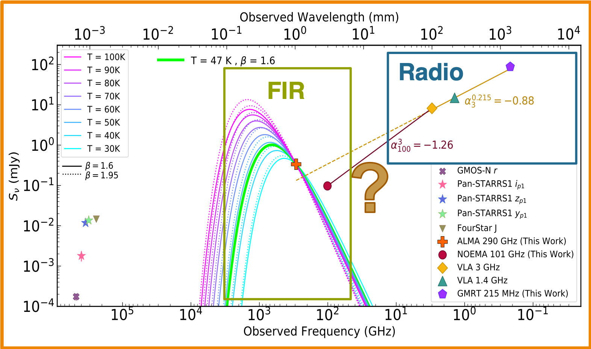

Galaxies and Quasars in the Epoch of Reionization
My field of expertise is on the Epoch of Reionization (EoR), that is the time when the Universe went through a major transition from neutral to ionized Hydrogen gas (going from darkness to light). This process occurred at some point when the first galaxies were forming until the the Universe was one billion years old (or at high-redshifts z ≳ 6). Among all the amazing things you can study about the EoR, I have been focusing on the massive bright galaxies and quasars, which are galaxies hosting active super massive black holes in their nuclei.
Finding Bright Galaxies at z ~ 9 in the HST BoRG Survey
 I looked for bright galaxies born in the first 500 million years of the
Universe (or at redhisft z ~ 9) using the pure-parallel
BoRG survey from the
Hubble Space Telescope. This survey has the advantage of covering continuous wavelengths from the visible to near-infrared (λ = 0.35-1.7 μm).
This way, we can perform the photometric redshift (or drop-out) technique to select Lyman Break Galaxies (LBGs).
For a couple of sources there is additional data at 3.6 μm from the Spitzer Space Telescope that helps to better constrain the photometric
redshift of the source.
We find 11 galaxy candidates at redshift z
≳ 7 and further study the bright end of the Luminosity Function (LF) at z ~ 8 and
at z ~ 9 (See Figure on the left).
Our comparison to previous studies of LBGs at similar redshifts show that
there is still a lot of descrepancy on the evolution of the LF at z ~ 9.
Read the paper
I looked for bright galaxies born in the first 500 million years of the
Universe (or at redhisft z ~ 9) using the pure-parallel
BoRG survey from the
Hubble Space Telescope. This survey has the advantage of covering continuous wavelengths from the visible to near-infrared (λ = 0.35-1.7 μm).
This way, we can perform the photometric redshift (or drop-out) technique to select Lyman Break Galaxies (LBGs).
For a couple of sources there is additional data at 3.6 μm from the Spitzer Space Telescope that helps to better constrain the photometric
redshift of the source.
We find 11 galaxy candidates at redshift z
≳ 7 and further study the bright end of the Luminosity Function (LF) at z ~ 8 and
at z ~ 9 (See Figure on the left).
Our comparison to previous studies of LBGs at similar redshifts show that
there is still a lot of descrepancy on the evolution of the LF at z ~ 9.
Read the paper
As the saying goes... A Spectrum is Worth a Thousand Pictures
It is crucial to confirm more galaxies at these high redshifts with spectroscopic observations. We will get follow-up observations with the James Webb Space Telescope from a JWST Cy1 Proposal that I Co-PI with Dr. Micaela Bagley to probe the redshift of a set of these galaxies and study their ionization power looking for their [OIII]/[OII] ratio.
The Role of Powerful Radio Jets in the Host Galaxy of a Quasar at z = 5.832
 Among the hundreds of quasars that have been discovered during the Epoch of Reionization (z ≳ 6), only about 10% of the population is bright in radio wavelengths. We study P352-15, the only quasar with direct evidence of extended radio jets (∼1.6 kpc) at these high redshifts, and test for the first time the interactions of the radio lobes in the interstellar medium of its host galaxy. We analyze the quasar emission in the radio an far-infrared regions of the Spectral Energy Distribution (SED). In the Radio we can study the synchrotron emission from the jets and are able to constrain the radio-loudness of the quasar to R>1000 using new observations at 215 MHz from GMRT, making this object one of the most powerful radio emitters at such a high redshift. In contrast to what is typically observed in high-redshift radio-quiet quasars, we show that cold dust emission alone cannot reproduce the millimeter continuum measurements from ALMA 290 GHz and NOEMA 100 GHz observations at the rest frame far-infrared (see Figure to the right). This is evidence that the strong synchrotron emission from the quasar contributes substantially to the emission even at millimeter wavelengths and hipothesize a break in the synchrotron emission between 3 GHz and 100 GHz. Read the paper
{kind=link}
Gauge the Age of the Jet from P352-15
We will be able to
constrain the age of the jet by knowing
i) The frequency at which its synchrotron spectrum steepens. For this, I PI a VLA proposal to measure the emission from the
quasar in all the offered frequency bands (from 1.4 GHz to 45 GHz) in C/D configuration
and pinpoint the frequency break.
ii) The magnetic field strength in the jet. We discovered that P352-15 has extended X-Ray emission in
this paper,
probing that the relativistic electrons in the jet cool down mainly via Inverse Compton scattering with the CMB (IC-CMB). Thus, we expect the
magnetic field in the radio lobe to be less than the magnetic field of the CMB at z=5.83.
Stay tuned for the results on this research!